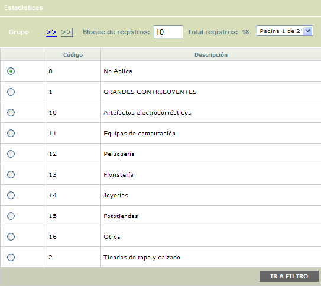
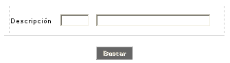
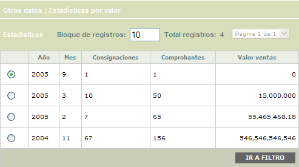
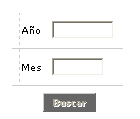
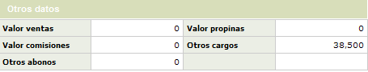
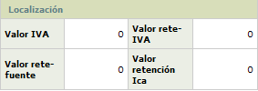

|
Estadística depósitos por grupo |
Mediante esta función es posible conocer, mes a mes, el movimiento acumulado de los establecimientos afiliados, mediante la agrupación o clasificación que les ha dado la entidad previamente.
Grupo: Muestra la información correspondiente a cada conjunto o agrupación de comercios definido previamente por la entidad financiera, y que es diferente a la clasificación por cadenas hecha por las franquicias. Este formulario cuanta con un filtro de búsqueda y la opción Estadísticas.

|
Código |
Despliega el código asignado a cada una de las cadenas de comercios. |
|
Descripción |
Contiene el nombre de la cadena asociada al código anterior. |
Filtro: Se pueden realizar consultas a través de la siguiente opción:

|
Grupo |
El campo código es numérico de hasta 4 dígitos. El usuario también puede seleccionar la cadena invocando la lista de valores contenida en el campo. |
Estadísticas: Conjunto de campos que muestran la información del movimiento específico de cada grupo de comercios en determinado período de tiempo; los datos desplegados pertenecen al registro sobre el cual se encuentra ubicado el cursor en el bloque anterior.
El formulario cuenta con un filtro para que el usuario pueda consultar las estadísticas para un año y/o mes en particular. Adicionalmente cuenta con la opción Otros datos.

|
Año |
Campo de salida en el que se muestra el año al cual hace referencia la información. |
|
Mes |
Indica el mes al que corresponde la información desplegada. |
|
Consignaciones |
Indica la cantidad de consignaciones realizadas por la cadena de comercios en determinado tiempo. |
|
Comprobantes |
Despliega la cantidad de comprobantes consignados por la cadena de comercios en determinado tiempo. |
|
Valor |
Contiene el monto total equivalente a las consignaciones realizadas por el grupo de comercios en determinado período de tiempo. |
Filtro: Se pueden realizar consultas a través de la siguiente opción:

|
Año |
El campo año admite cualquier valor numérico de hasta 4 dígitos |
|
Mes |
El campo mes admite cualquier valor numérico de hasta 2 dígitos |
Otros datos: En este espacio se muestra con mayor detalle, información adicional del grupo correspondiente al registro sobre el cual se encuentra ubicado el cursor en el bloque Grupo.

|
Valor ventas |
Muestra el valor total de las ventas del grupo que se está consultando en determinado período de tiempo. |
|
Valor propinas |
Despliega el valor total de la retención en la fuente practicada al grupo de comercios que se está consultando en determinado período de tiempo. |
|
Valor comisiones |
Refleja el valor total de las comisiones (porcentaje de descuento) practicadas al grupo que se está consultando en determinado período de tiempo. |
|
Otros cargos |
Señala el valor total de notas débito efectuados al grupo de comercios que se está consultando en determinado período de tiempo. |
|
Otros abonos |
Muestra el valor total de notas crédito efectuados al grupo de comercios que se está consultando en determinado período de tiempo. |
Información de Localización:

|
Valor iva |
Señala el valor del impuesto de valor agregado (IVA) correspondiente al movimiento consignado por el grupo de establecimiento, por cada uno de los meses en que se hayan generado las estadísticas correspondientes. |
|
Valor reteiva |
Informa acerca del valor retenido al grupo de establecimientos, y acumulado por cada mes, sobre el impuesto del valor agregado, acorde con la legislación vigente. |
|
Valor retefuente |
Despliega el valor total de la retención en la fuente practicada al grupo de comercios que se está consultando en determinado período de tiempo. |
|
Valor reteica |
Si aplica, contiene el valor retenido por concepto del impuesto de industria y comercio (ICA), correspondiente al movimiento consignado por el grupo de establecimientos, mes a mes. |